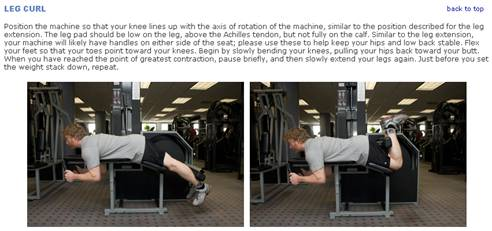

TLW Example
Leg Curl(_MG_3368.jpg,_MG_3369.jpg)
Position the machine so that your knee lines up with the axis of rotation of the machine, similar to the position described for the leg extension. The leg pad should be low on the leg, above the Achilles tendon, but not fully on the calf. Similar to the leg extension, your machine will likely have handles on either side of the seat; please use these to help keep your hips and low back stable. Flex your feet so that your toes point toward your knees.
Begin by slowly bending your knees, pulling your hips back toward your butt. When you have reached the point of greatest contraction, pause briefly, and then slowly extend your legs again. Just before you set the weight stack down, repeat.
Leg Press(_MG_3371.jpg,_MG_3372.jpg)
This will likely be one of (if not the most) the most demanding exercises in your workout, as it works a lot of muscle. Be conservative with weight and intensity increases on this one. If possible, set your seat so that, when you extend your legs, you stop just short of locking out your knees. This will help keep continuous tension on the leg muscles. If your leg press allows you to change the angle of the back pad, experiment. A more upright position tends to concentrate the work on the quadriceps (front of the thigh), while a more reclined position tends to get the hamstrings and gluteus muscles more involved, along with the quadriceps. Once you are set, slowly and steadily extend your legs, until you reach the stopping point of the machine, or until you are just short of locking your knees out. There is no need for a pause in this position; simply turn the movement around, slowly and smoothly, until your legs are bent 90 degrees. Avoid bringing your legs back past this point, as your hips will usually elevate, and when it is time to press the weight out again, your lower back will be called upon to pull the hips back down. This is an unsafe position for the lower back to have to work in.
Website Output Example
